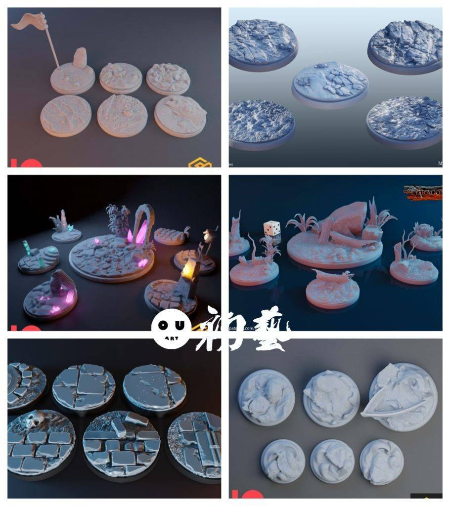
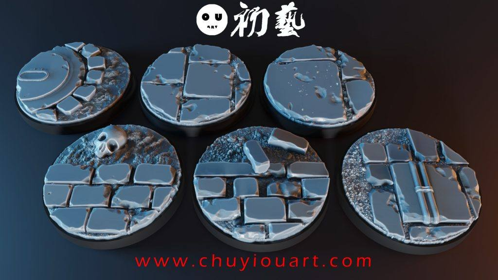
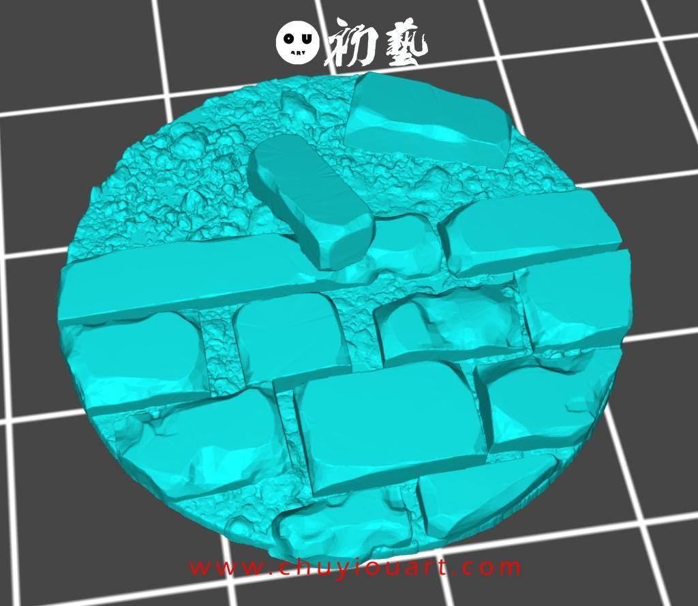
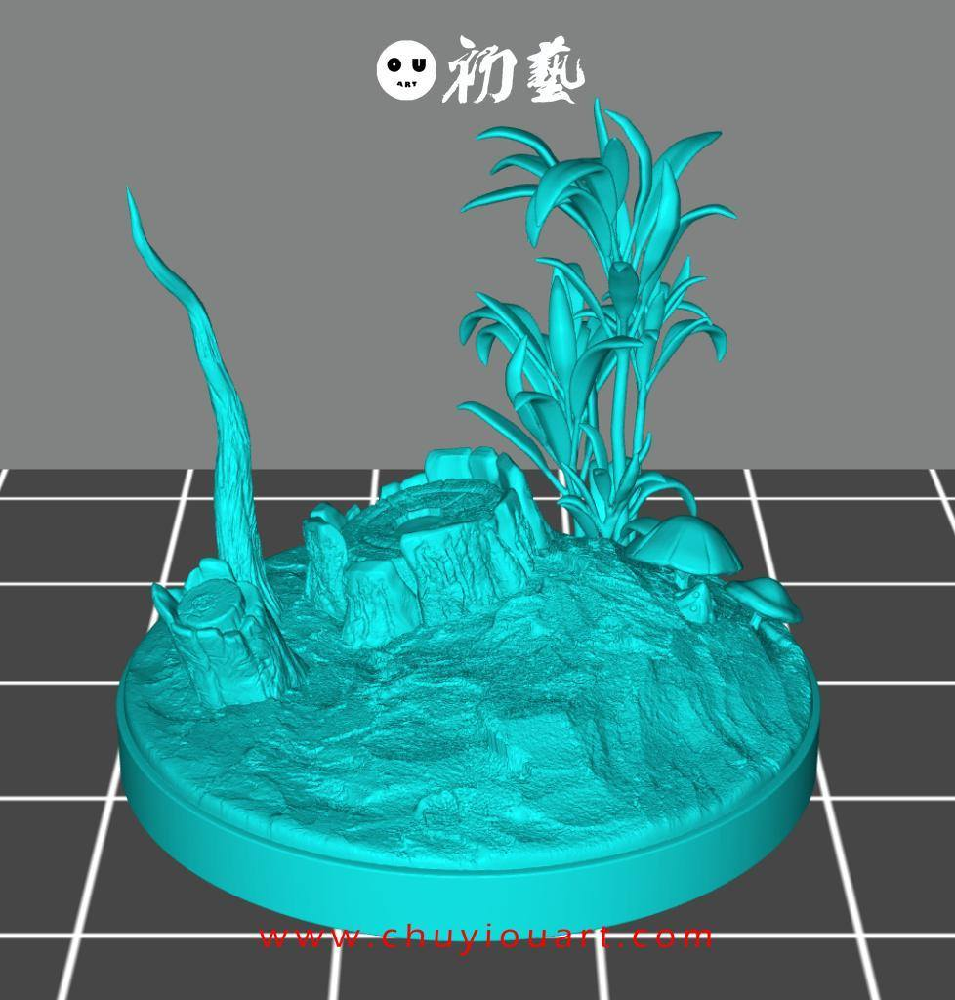
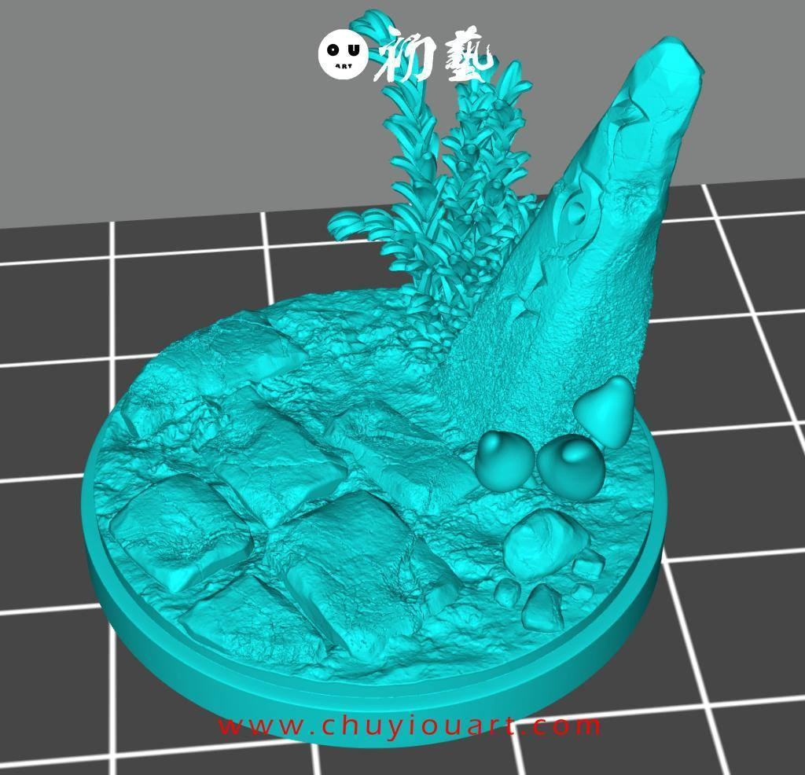
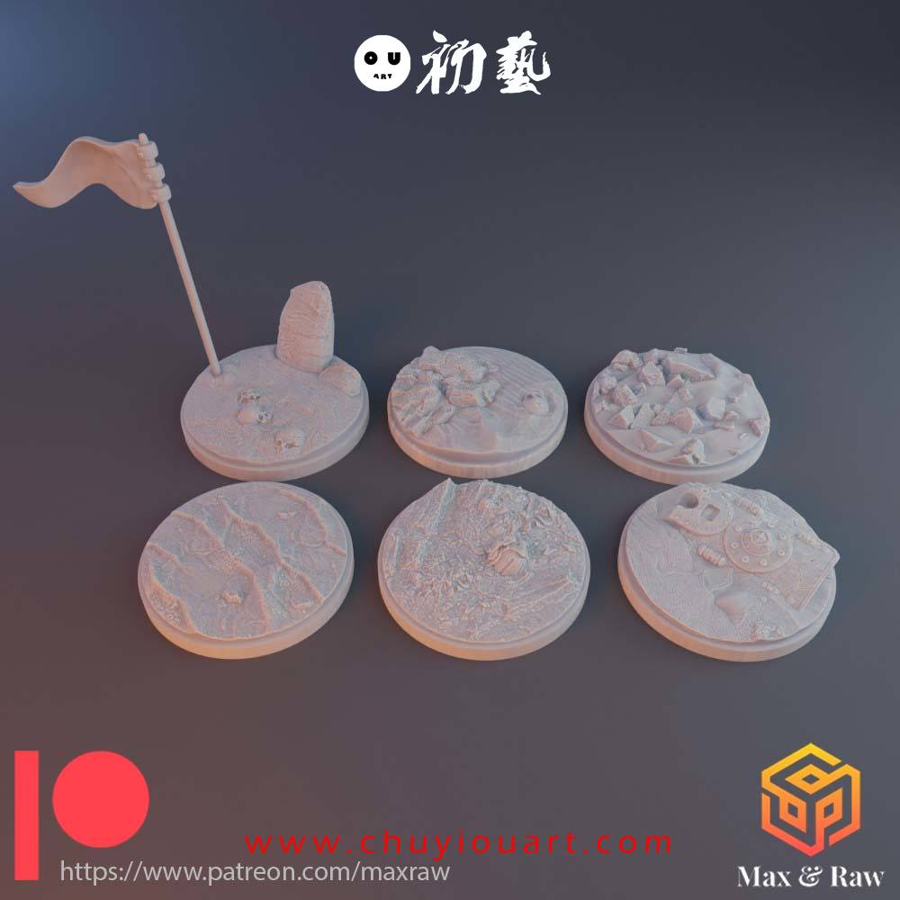
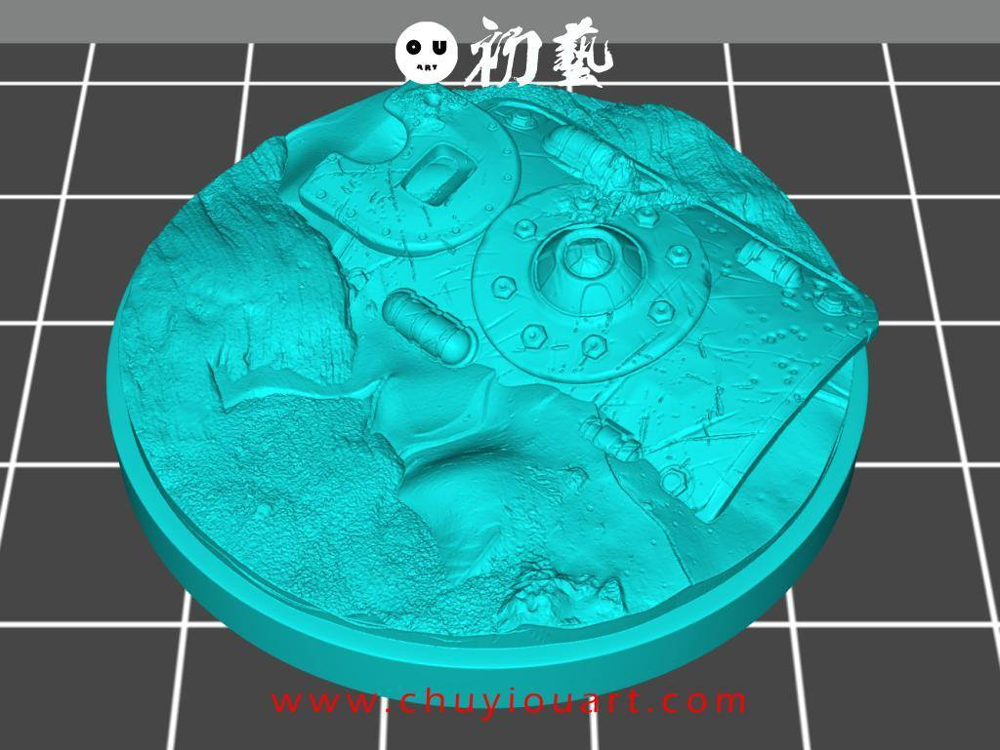
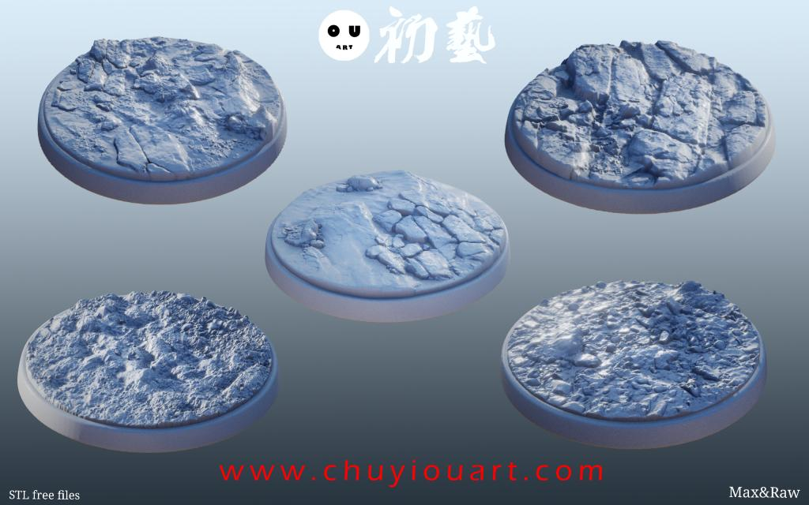
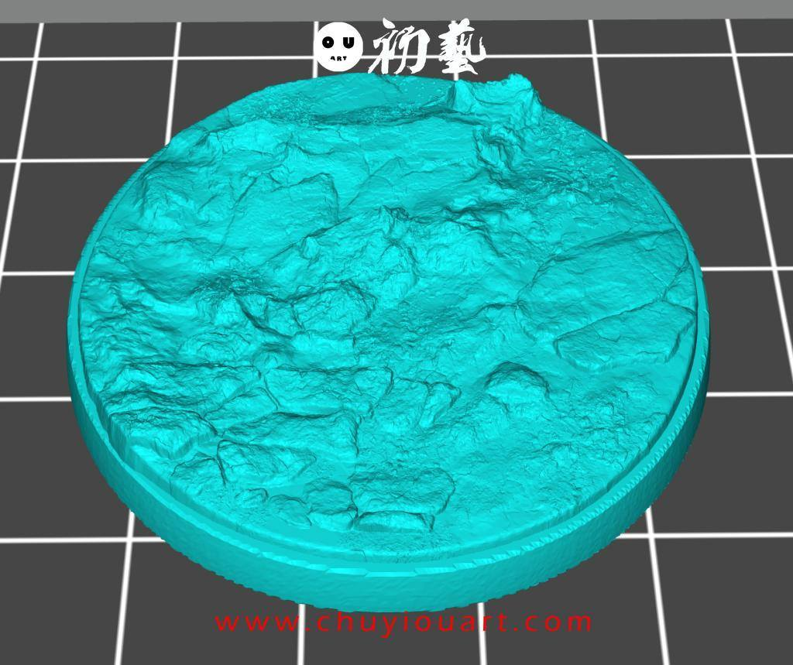

9月15日STl图纸文件分享
提取码
1nne
1.海洋沙滩主题地台，共5个，场景细腻。
链接：https://pan.baidu.com/s/1MUVXxh_ON4YEEGlvquPw_Q
提取码：1nne


2.地砖石材地台6款，搭配草粉效果会非常好，比起泡沫做要省事，主要是结实，尺寸稍点大用fdm打印就行，做微缩还得光固化。
链接：https://pan.baidu.com/s/1AQk2Ahkl52XOFz24RFfAfQ
提取码：5gsn


3.有植物搭配的地台，6款，细节很好，推荐。
链接：https://pan.baidu.com/s/1kBKirph2kcGu86hEq5EjSA
提取码：qjrs


4.这组是综合地台7款，需要找到合适的搭子才好看。
链接：https://pan.baidu.com/s/1ex8uLGJV0axo6qCCMX2XYA
提取码：05wz


5.沙石遗迹6款，带有配件的地台，其实用我们说的组合方式可以自己定制合适的地台使用，这些也给我们提供一些思考方向。
链接：https://pan.baidu.com/s/10B37P2KYvZQA9oqnqHDMKA
提取码：2p59


6.最后这组是碎石地台5款，没用特色但是最实用，百搭的。
链接：https://pan.baidu.com/s/17NUEmHMQLfsUW8SrAHyAMg
提取码：jye5


以上内容仅供个人使用（非商用）
ONLY for PERSONAL (NON-COMMERCIAL) use.
加群获得更多免费模型！